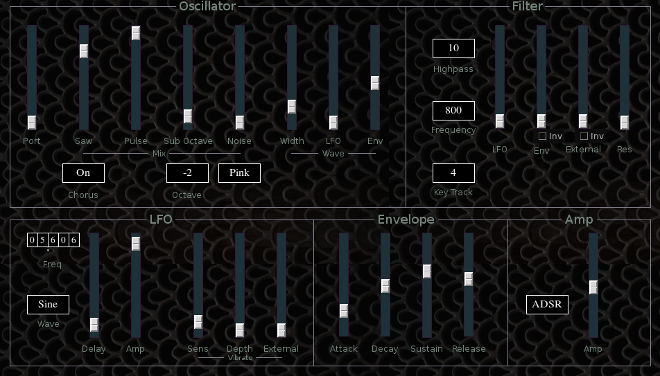

SS1
 Previous( Sol )
Next( SS2 )
Home
Contents
Synth Catalog
Previous( Sol )
Next( SS2 )
Home
Contents
Synth Catalog
SS1 (Simple Synth 1) is a single oscillator subtractive synth with a voice structure comparable to the Roland Sh-09.
 Oscillator- Port slider, portamento (not available with Poly1 keymode).
- Saw slider, sawtooth mix.
- Pulse slider, pulse wave mix.
- Sub Octave slider, sub octave square wave mix.
- Noise slider, noise mix.
- Wave Width slider, sawtooth and pulse waves width.
- Wave LFO slider, LFO application to wave width.
- Wave Env Slider, Env application to wave width.
- Chorus button, Turns chorus effect on by slightly detuning pulse wave relative to sawtooth.
- Octave Button, selects sub octave to -1 or -2 octaves.
- Noise button, selects white or pink noise.
- Highpass button, static highpass cutoff.
- Frequency button, Lowpass cutoff.
- Key track button, selectes filter key track amount.
- LFO slider, LFO to filter frequency.
- Env Slider, envelope to filter frequency.
- External slider, external control to filter frequency.
- Env and External Inv buttons, invert polarity.
- Res slider, filter resonace.
- Freq tumbler, LFO frequency.
- Wave button, Select Sine, Square or Sample and Hold waves.
- Delay slider, LFO onset delay.
- Amp slider, LFO amplitude.
- Vibrato Sens, sensitivity.
- Vibrato Depth.
- Vibrato External, external control to pitch.
Envelope: Single ADSR style envelpe.
Amp- (Unmarked button) selectes ADSR or Gate for main amplitude envelope.
- Amp slider, output amplitude.
Previous( Sol ) Next( SS2 ) Home Contents Synth Catalog